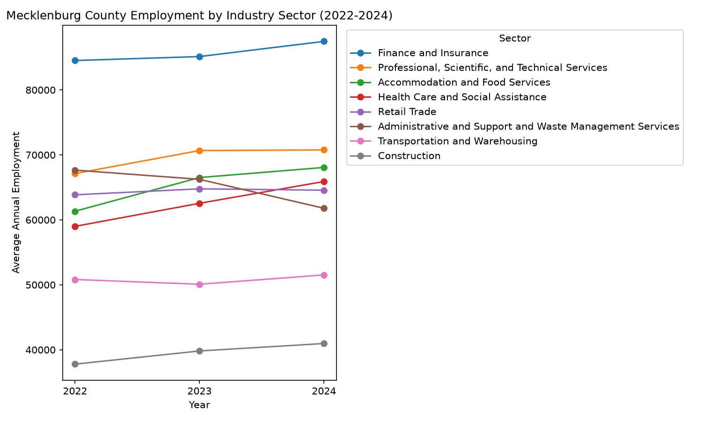
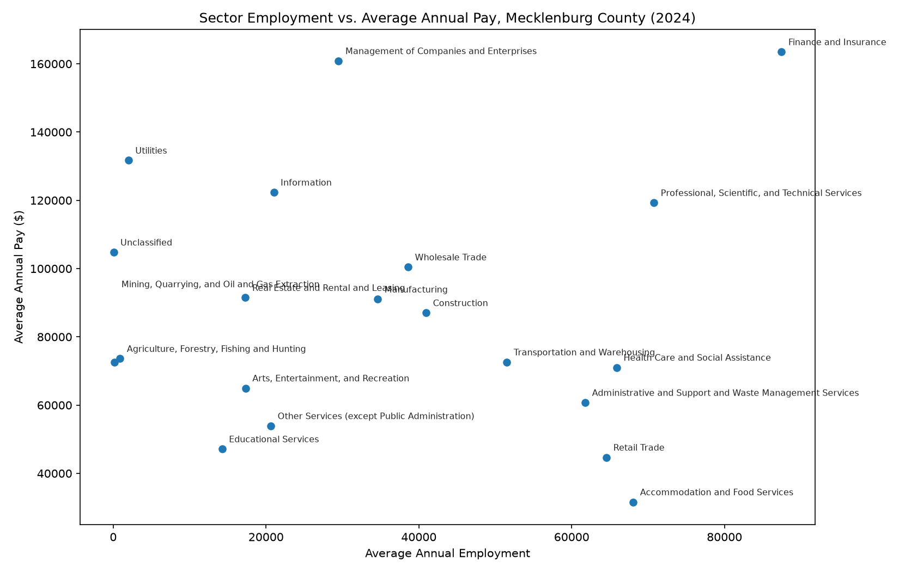

Charlotte Small Business Impact of NC SB 257
Problem definition
Primary question: How did NC Senate Bill 257 (the 2026 Appropriations Act) affect small businesses in Charlotte, NC, and which industries (by NAICS code) were directly versus indirectly exposed to its provisions?
Secondary question: Among small businesses affected by SB 257, which variables (industry, firm size, legal structure) are the strongest predictors of impact severity?
This research matters because Mecklenburg County is home to a large, diverse small-business base, and state-level budget decisions ripple into local economies in ways that are easy to overlook next to federal-level policy debates. SB 257 (S.L. 2026-41) reallocates appropriations across education, health and human services, commerce, and other state functions — changes that flow through to local employers via state contracts, workforce funding, licensing, and public-sector demand. Small business owners in sectors tied to state funding, education services, healthcare, and construction tied to public projects have a direct stake in understanding this exposure. Local economic development officials, Chamber of Commerce groups, and policymakers weighing the bill's downstream effects are the other audience for this kind of sector-level breakdown.Data description
This analysis uses the Bureau of Labor Statistics' Quarterly Census of Employment and Wages (QCEW), which publishes county-level establishment counts, employment, and wages by NAICS industry sector with no API key required. Data covers Mecklenburg County, NC (FIPS 37119), private-sector employers only, for 2022–2024, at the NAICS Sector level (2-digit industry codes: Construction, Retail Trade, Finance and Insurance, etc.). Each row represents one industry sector in one year. The original Census Bureau County Business Patterns and Nonemployer Statistics APIs were the original plan for this project but were unavailable during data collection (an API key issue combined with a Census API service outage), so QCEW was used as a substitute, with a key limitation noted below.
- NAICS Sector (2-digit industry code) — the industry classification unit of analysis
- Annual average employment — operationalizes "size of a sector's workforce" for a given year
- Average annual pay — operationalizes "wage level" for a sector
- Establishment count — operationalizes "number of business units" in a sector, a proxy for market structure
- Provision-tier classification (directly / indirectly / not materially affected) — planned but not yet implemented; see Ethics and Limitations
Data cleaning and preparation
The raw QCEW county file includes every ownership type (federal, state, local government, and private) and every level of industry aggregation (totals, domains, supersectors, sectors, and sub-sector detail) mixed together in the same file. Two filters were applied:
- Ownership filter (
own_code == 5) — kept private-sector employers only, excluding government employers, which aren't "small businesses" in any meaningful sense for this study. - Aggregation-level filter (
agglvl_code == 74) — kept county-level, NAICS Sector (2-digit) rows only. This level was chosen because mixing aggregation levels (e.g., a sector total alongside its own sub-sectors) would double-count establishments and employment when summed or charted.
Industry codes were mapped to readable sector names using the standard NAICS 2017 2-digit sector titles, verified against the actual industry codes present in the filtered data rather than assumed from documentation alone.
Visualizations and insights

Finance and Insurance is consistently the largest private-sector employer among Mecklenburg County's major industries and grew across 2022–2024, consistent with Charlotte's role as a regional banking hub. Professional, Scientific, and Technical Services grew sharply between 2022 and 2023 before leveling off. Administrative and Support and Waste Management Services is the only major sector to decline over the period.

Comparing pay against employment by sector for 2024 shows wage polarization: high-pay/low-employment sectors (Management of Companies, Utilities, Information) versus high-employment/lower-pay sectors (Accommodation and Food Services, Retail Trade). Finance and Insurance is the exception, ranking high on both.
Storytelling and narrative
Since Health Care and Social Assistance and Educational Services are sectors most plausibly tied to state appropriations changes (these are the largest categories in SB 257's own budget), it's worth noting that both sit toward the lower end of Mecklenburg County's pay scale in the 2024 wage-vs-employment chart. If these sectors are meaningfully exposed to the bill's provisions, that exposure would fall on a comparatively lower-wage, higher-employment segment of the local workforce rather than a small, high-earning slice. Finance and Insurance, the county's largest and highest-paid sector, appears far less directly tied to a state appropriations act and likely sees limited direct exposure. This is a hypothesis based on sector patterns, not a confirmed mapping — it still needs verification against the bill's actual Commerce and Revenue sections before being stated as a finding.What this data does not support: any claim that SB 257 caused a specific employment or wage change. The dataset covers 2022–2024, entirely before the bill's July 2026 enactment, so it establishes a pre-existing baseline, not a before/after comparison.
Ethics and limitations
- Employer-only coverage — QCEW covers only establishments with paid employees. Sole proprietors and very small nonemployer firms, likely a meaningful share of "small businesses" in the colloquial sense, are entirely absent from this dataset. Census Nonemployer Statistics was the intended source for this gap but could not be incorporated due to API access issues during this project's data-collection window.
- Disclosure suppression — some county-by-industry cells in BLS and Census county-level data are suppressed or noise-infused to protect individual employer confidentiality (Evans, Zayatz, & Slanta, 1998), meaning the smallest or most concentrated industries may be under-represented or missing entirely.
- No causal claim — this dataset covers 2022–2024, entirely before SB 257 (S.L. 2026-41)'s July 2026 enactment. Any employment trend shown here reflects pre-existing patterns, not the bill's effect. A genuine before/after comparison requires QCEW data covering mid-to-late 2026, which BLS has not yet published.
- Provision-tier mapping incomplete — this analysis groups industries by NAICS sector but does not yet map specific SB 257 budget provisions (Commerce, Revenue/tax, education/health appropriations sections) to those sectors. That mapping requires reading the enacted bill text directly and is the natural next step for this project.
Code and transparency
sb257_data_pipeline.py·qcew_fallback_pipeline.py·qcew_filter_plot.py
References
- Bartlett, R. P., III, & Morse, A. (2021). Small-business survival capabilities and fiscal programs: Evidence from Oakland. Journal of Financial and Quantitative Analysis, 56(7), 2500–2544.
- Slattery, C., & Zidar, O. (2020). Evaluating state and local business incentives. Journal of Economic Perspectives, 34(2), 90–118.
- Evans, T., Zayatz, L., & Slanta, J. (1998). Using noise for disclosure limitation of establishment tabular data. Journal of Official Statistics.
- U.S. Bureau of Labor Statistics. (2026). Quarterly Census of Employment and Wages. bls.gov/cew
- North Carolina General Assembly. (2026). Senate Bill 257: 2026 Appropriations Act [S.L. 2026-41]. ncleg.gov/BillLookup/2025/S257